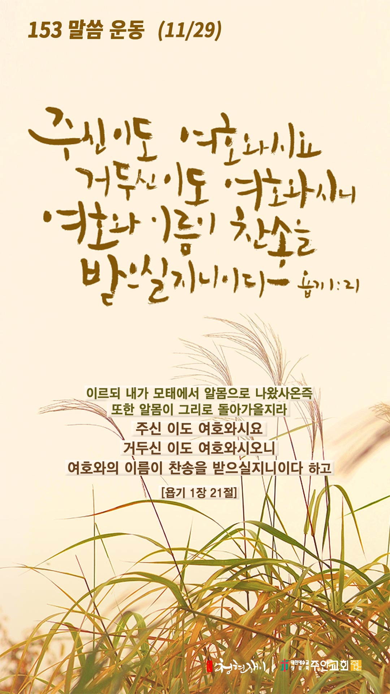

온라인 기도실 안내
2020년 11월29일(일)~12월05일(토)
- 온라인 기도실은 온 회중이 함께 하나님께 나아가는 자리입니다
- 30분 정도 여유를 가지고 하시길 바랍니다
- 말씀과 묵상, 찬양과 기도로 함께 합니다
- 배경 음악이 나올 수 있습니다 볼륨을 조절해주세요
준비가 되셨으면 아래의 버튼을 눌러주세요
찬양, 주의 성실을 찬양하리이다
(시71:22)
- 가사를 묵상하며 읽습니다
왕이신 나의 하나님
내가 주를 높이고
영원히 주의 이름을
송축 하리이다
찬양, 주의 성실을 찬양하리이다
(시71:22)
왕이신 나의 하나님 by 찬미예수2000
위의 찬양이 끝나면 말씀읽기를 눌러주시면 됩니다
말씀하옵소서, 주의 종이 듣겠나이다
(삼상3:10)
오늘의 말씀입니다
음악 소리가 크면 조절하시기 바랍니다

마음의 묵상
(욥1:21)
“이르되 내가 모태에서 알몸으로 나왔사온즉 또한 알몸이 그리로 돌아가올지라 주신 이도 여호와시요 거두신 이도 여호와시오니 여호와의 이름을 찬송합니다”
1. 지금 마음속을 채우고 있는 생각들이 어떤 것들인가요?
2. 말씀에 비추어 채움보다 비움에 대해 묵상해봅시다
3. 나의 인생의 궁극적인 목적이 여호와의 이름을 송축하는 것인가요?
여호와의 이름이 찬송을 받으소서
회개, 삶의 방향을 바꾸는 결정
탕자를 향해 종일 손을 내밀고 계신 주님
그분께 돌아가는 자에게 복이 있습니다
“돌이키고 돌이키라 너희 악한 길에서 떠나라”
- 에스겔 33장11절 -
3분 정도 회개하며 주님 앞에 나아갑니다
내 중심이 주를 간절히 구하오리니
(사26:9)
- 다음의 을 소리 내어 읽습니다
사랑하는 주 하나님 주의 은총을 주시어서
제가 주의 말씀을 제대로 이해하게 하시고
나아가 그 말씀을 행하게 하소서
그러나 주 예수 그리스도시여
저의 탐구가 단지 주님께 영광을 돌리지 못한다면
차라리 한 자도 이해하지 못하게 하소서
단지 유익할 정도만 보여주셔서 주님께 영광을 돌리게 하소서
마틴 루터, 성경을 읽으며
하나님 나라
1. 하나님의 나라가 속히 이 땅에 임하게 하소서
하나님 아버지, 온 세상이 만왕의 왕으로 다시 오실 예수님을 간절히 소망하게 하시고,
이번 성탄절에 코로나19를 퇴치할 수 있는 백신과 치료제를 온 인류에게 선물로 주옵소서.
간절한 마음으로 3분 정도 기도합시다
남과 북
2. 남북한이 속히 복음으로 통일되게 하소서
하나님 아버지, 북한이 코로나19로 인하여 매우 어려움 가운데 있사오니,
북한 정권이 대화의 문을 열고 나와 남한과 미국의 도움으로 어려움을 극복하게 하소서.
간절한 마음으로 3분 정도 기도합시다
대한민국
3. 우리나라가 하나님을 경외하는 나라가 되게 하소서
하나님 아버지, 우리나라가 생명을 존중하는 나라가 되게 하시고,
생명의 주권이 오직 하나님께 있음을 깨달아 정부에서 입안하고 있는 낙태법 개정안이 국회에서 통과되지 않게 하소서.
간절한 마음으로 3분 정도 기도합시다
한국교회
4. 한국교회가 성령으로 새롭게 부흥되게 하소서
하나님 아버지, 한국교회가 다시 오실 예수님을 맞이하기 위하여 분열과 목회 세습과 물질숭배와
세속화를 회개하고 성령안에서 새롭게 거듭나게 하여 주옵소서.
간절한 마음으로 3분 정도 기도합시다
주안교회
5. 주안교회가 선교적 삶으로 세상을 섬기고 치유하게 하소서
하나님 아버지, 주안의 모든 성도들이 생명의 주권이 오직 하나님께 있음을 고백하면서,
태아의 생명권을 침해하는 법이나 사회 시스템에 반대하고 생명존중에 앞장서게 하소서.
간절한 마음으로 3분 정도 기도합시다
감사의 기도
- 오늘 기도를 인도하신 주님께 감사를 올려드립니다
- 아래의 구절을 읽고 주님께 감사의 마음을 올려드립시다
“우리는 주의 백성이요 주의 목장의 양이니 우리는 영원히 주께 감사하며 주의 영예를 대대에 전하리이다”
- 시편 79장 13절 -
고요한 가운데 잠시 침묵하시기 바랍니다
파송, 세상을 향하여
- 오늘의 온라인 기도를 마쳤습니다
기도를 들으신 주님께서 평안히 가라 하십니다
주님께서 우리와 함께 하시니 두려울 것이 없습니다
새벽을 깨우며
- 새벽기도회 안내입니다